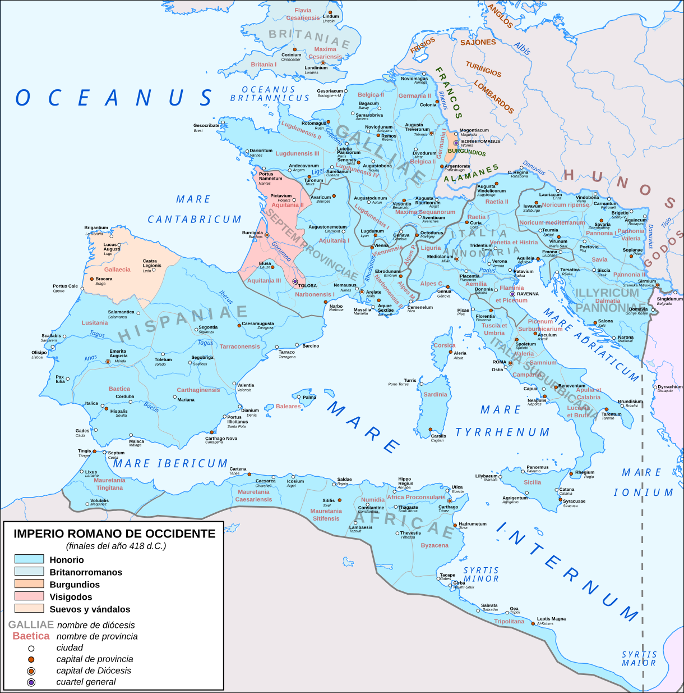
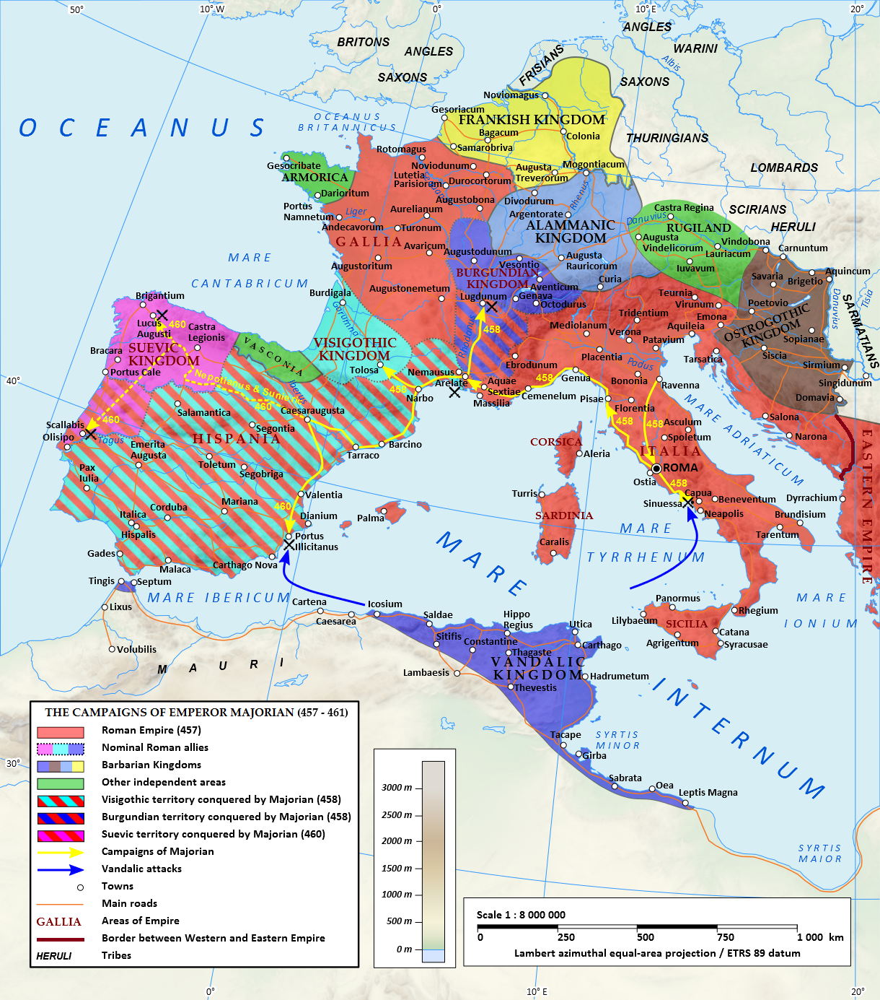

Antieke Oudheid en Middeleeuwen: het continuïteitsvraagstuk.

Inleiding
Gedurende de eerste vier eeuwen van onze jaartelling maakten onze streken deel uit van het Imperium Romanum en werden zo opgenomen in de Middellandse Zeewereld, waar de beschaving van Griekenland en Rome al eeuwenlang voortbouwden op wat de culturen in de rivierdalen van Nijl, Tigris en Eufraat hadden verwezenlijkt. Het kerngebied van Romeinse Rijk was overduidelijk mediterraan van karakter; olijfboom en wijnstok beheersten naast graan hun landbouw, de steden droegen de hellenistische cultuur en het Romeinse politieke gezag en ook het christendom heeft onmiskenbaar mediterrane wortels. Namen de Germaanse koninkrijken die in de vroege Middeleeuwen de plaats innamen van het Romeinse Rijk een nieuwe start of leefden nog tradities uit de antieke Oudheid voort in West-Europa? De discussie heeft haar belang bij het bepalen van de wortels van de Europese beschaving en voor het belang dat we dienen te hechten aan het klassieke Hellas en Rome in geschiedenis- en cultuuronderwijs.
Immers een befaamd historicus als Paul Veyne twijfelde aan de band met de Grieken en de Romeinen. In de inleiding tot het eerste deel van de reeks "Geschiedenis van het Persoonlijk Leven in Europa" schrijft hij letterlijk dat de Romeinen in exotisme niet onderdoen voor de Indianen en de Japanners. Hij heeft wellicht de uitspraak in extreme bewoordingen gesteld om polemiek uit te lokken, maar toch …
Het staat niet vast dat deze beschaving (de Grieks-Romeinse) het fundament is van het huidige Westen (het christendom, de technologie en het concept van de rechten van de mens zijn veel belangrijker).
… een eerste reden om deze geschiedenis met hen te beginnen: om een contrast aan te brengen en niet om te laten zien hoe het toekomstige Westen zich reeds aftekent.
Zo groeide het idee om de periode tussen Oudheid en Middeleeuwen te benaderen vanuit twee invalshoeken: transitiones (overgangen naar iets nieuws) en traditiones (doorleven van het oude). Het denken over de continuïteit tussen Oudheid en Middeleeuwen heeft de laatste twintig jaar een evolutie gekend. Vooral op het gebied van de stadsgeschiedenis komt dat tot uiting. We hebben de nieuwe inzichten trachten te verwerken in de vernieuwde pagina over de Europese stad.
Wie de gigantische kop van Constantijn de Grote in het Conservatorenpaleis te Rome vergelijkt met een standbeeld van Augustus, raakt onder de indruk van de tegenstelling tussen een expressionisme, dat een glimp van het bovennatuurlijke wil weergeven, en de antieke, klassieke rust. Vroeger aanzagen kunsthistorici dit als een verval, maar het is duidelijk dat de vroegchristelijke sarcofagen in de Provence en in het Vaticaanse museum en de mozaïeken in de basilieken van Rome en Ravenna nieuwe hoogtepunten zijn in de evolutie van de kunst (zie het derde hoofdstuk: Van catacomben naar gotische torenspits). Klassieke invloeden blijven aanwijsbaar, maar de nieuwe inhoud vroeg om een andere uitwerking.
Historiografie
De boeken en de artikels, die zijn geschreven over de val van het Romeinse Rijk, vullen intussen een hele bibliotheek. De theorieën vallen uiteen in twee groepen: externe of interne oorzaken. Oudhistorici en classici die in hun opleiding grondig de Latijnse en Griekse cultuur hebben bestudeerd, hebben het moeilijk om te begrijpen hoe zo'n hoogstaande beschaving kon verdwijnen. Ook de tegenstelling tussen Duitse en Franse historici valt op. De eersten omschrijven de periode tussen 375 en het einde van het Westromeinse Rijk als die van de Volksverhuizingen (Volksverwänderungen), waarbij hele volkeren zoals de Wisigoten, de Ostrogoten, de Vandalen, de Alemannen, de Bourgondiërs en de Franken (om de belangrijkste te noemen) de Rijn overstaken om de decadente Romeinse samenleving van vers bloed te voorzien. Hun Franse collega's spraken liever van les invasions barbares, invallen van plunderende bendes die alles op hun weg naar het zuiden vernietigden, hooligans om een moderne term te gebruiken, zonder een positieve bijdrage te leveren.
In de jaren '60 ontstond de theorie van de ethnogenese (Grieks ethnos = volk, genesis = ontstaan, vorming). Volgens deze theorie gebeurden de migraties door de aaneensluiting van groepen van diverse oorsprong, aangevuld met provinciebewoners en gevluchte slaven, die langzamerhand, op hun tocht door het Romeinse Rijk, een eigen identiteit verwierven, gebaseerd op die van de dominante groep die ook haar naam aan het nieuwe volk gaf. Zo omvatte het leger van de Longobarden dat na de dood van Justinianus Italië binnenviel, ook nog groepen Saksen, Gepiden, Bulgaren, Ostrogoten, Sarmaten, Sueven en provinciebewoners uit Pannonië (het huidige Hongarije) en Noricum (het huidige Oostenrijk). Daaruit zou uiteindelijk het Longobardische koninkrijk ontstaan. Zie ook: Bruno Dumézil L'identité franque au 6ième siècle in Nos ancêtres les Barbares, musée de Saint-Dizier/Somogy éditions d'Art, 2008.
Nog later spraken de oudhistorici liever van een transformatieproces waarbij Germaanse inwijkelingen prestige genoten in een Romeinse Rijk dat onderhevig was aan een 'intern barbariseringsproces'. Dat onderzoek naar de processen die leiden tot de integratie van Germaanse migranten in het laat-Romeinse Rijk kreeg financiële steun van de Europse Unie, op zoek naar de wortels van het Europese beschaving, en gaf aanleiding tot ironische-sarcastische reacties vanuit de Verenigde Staten (zie op YouTube de voordracht van Michael Kulikowski, de passage over de subsidiëring is te beluisteren tussen 3:05 en 3:45). Ook het werk van Guy Halsall sluit nauw aan bij dat transformatiedenken. De breuk tussen Oudheid en Middeleeuwen werd minder scherp gezien en de periode tussen 450 en 750 werd omschreven als late Oudheid. Eigenlijk lag de Belgische historicus Pirenne aan de oorsprong van deze visie. Late Antiquity werd een begrip, een tijdvalk op zichzelf, in het werk van latere historici zoals Peter Brown.
In het begin van de 21ste eeuw kwam de tegenreactie op gang. Externe oorzaken zoals de Germaanse invallen kregen opnieuw alle aandacht. Peter Heather beschouwt de onderschatting van de bijdrage van de Germaanse volkeren tot het einde van het Romeinse Rijk zelfs als een vorm van racisme of neo-kolonialisme. Bovendien hadden deze volkeren een duidelijke identiteit (tegen de ethnogenesetheorie) en namen zij de macht in West-Europa op een gewelddadige manier over (geweld is de regel, niet de uitzondering zoals de transformatie-theorie volhield). Zo kwamen zijn inzichten in politiek vaarwater. Dat verschillende volkeren, elk met hun uniek identiteit, het multiculturele rijk van Rome van de kaart veegden, leidt te gemakkelijk tot de conclusie dat elke vorm van migratie dient vermeden, omdat zo de culturele eigenheid van het gastvolk wordt ondermijnd (cfr. de 'omvolkingstheorie, de politiek van de regering Orban in Hongarije, de jongerenafdeling van de partij Alternative für Deutschland die hun lentewandeling van 2019 (https://afd.nrw/aktuelles/2019/04/unsere-junge-alternative-wanderte-am-wochenende-zum-hermannsdenkmal/) in het teken plaatsten van de figuur van de Cherusk Arminius die in het Teutoburger Woud de mediterrane immigranten – de Romeinse legioenen! – op bloedige wijze een halt toeriep).
Wij verkiezen om een onderscheid te maken tussen oorzaken op lange termijn en op korte termijn om zo de eindeloze discussie extern - intern te ontzenuwen.
Een veelgemaakte fout is om drie belangrijke evoluties in de late Oudheid te sterk aan elkaar te koppelen: de desintegratie van het Romeinse Rijk als politieke entiteit, de overgang van heidendom naar christendom en de economische veranderingen (toenemende concentratie van grootgrondbezit in het Westen, verzwakking van interne handel die de economische eenheid rond de Middellandse Zee langzamerhand verbrak, toenemende staatstussenkomst, muntcrisissen). Ook klimaatverandering en epidemies hebben op lange termijn (la longue durée van Braudel) hun rol gespeeld. In het verleden zijn de laatste eeuwen van het Romeinse Rijk te eenzijdig als een ononderbroken periode van verval en decadentie beschreven. De Franse term voor het laat-Romeinse Rijk, le Bas-Empire, spreekt in deze context boekdelen. De late Oudheid wordt zo herleid tot een overgang naar de Middeleeuwen of tot een prelude voor die Middeleeuwen. In de huidge academische wereld beschouwen ze de late Oudheid als een zelfstandige periode. Trouwens dikwijls vergeten we dat het oostelijke deel van het Romeinse Rijk bleef voortbestaan tot 1453.
Elk historisch onderzoek over het einde van de Oudheid kampt met een gebrek aan statistisch materiaal. Indien er cijfermateriaal beschikbaar is, is dit gewoonlijk beperkt in tijd en ruimte, terwijl toch het besef is gegroeid dat de provincies binnen het Romeinse Rijk soms een verschillende ontwikkeling kenden of dat een bepaalde ontwikkeling zich niet overal in dezelfde periode of met dezelfde intensiteit voordeed. Zo riskeren we op basis van schaarse gegevens teveel veralgemeningen door te voeren. Bovendien begaan auteurs van syntheses de vergissing om verbanden te leggen tussen fenomenen waarvan de relevantie vaak steunt op zulke fragmentarische onderzoeken.
Daarom zullen we beginnen met de oorzaken te duiden van de militaire ondergang en desintegratie van het Westromeinse rijk binnen een tijdspanne van enkele decennia, één of twee generaties van een mensenleven. Dat zal ons toelaten om te focussen op de oorzaken van deze fatale crisis. Dit betekent ook dat we geen apart hoofdstuk meer inlassen over de crisis van de derde eeuw en over de herstelpolitiek van Diocletianus en Constantijn. We zullen over de geschiedenis tussen 395 en 476 enkel de hoofdlijnen aangeven. Voor een volledig overzicht kunnen we het boek van Jeroen Wijnendaele, Romeinen en barbaren, De ondergang van het Romeinse Rijk in het Westen aanraden. Dat werk geeft als eerste in het Nederlandse taalgebied een gedetailleerd overzicht van de gebeurtenissen in de lange vijfde eeuw (375-493) en van hun politieke achtergronden.
Desintegratie van een wereldrijk
Het begin van het einde laten we aanvangen in 376, toen Gotische stammen toestemming kregen om zich ten zuiden van de Donau te vestigen. Corrupte ambtenaren zorgden voor hongersnood, waarna de stammen in opstand kwamen en in 378 bij Adrianopel twee derde van het keizerlijk veldleger in het Oosten in de pan hakte. De legers van het laat-Romeinse Rijk waren trouwens veel kleiner dan tijdens de Republiek of het vroege principaat. Daarom had de nederlaag bij Adrianopel zwaardere repercussies dan de veldslagen tegen Hannibal, waarvan die van Cannae alleen al veel meer mensenlevens had geëist. Bovendien had de veldslag bij Mursa (het huidige Osijek in het vroegere Joegoslavië) in 351 tussen de Illyrische troepen van keizer Constantius en de Gallisch-Germaanse van de usurpator Magnentius de rangen van de Romeinse legers al uitgedund. De veldtocht van keizer Julianus in Perzië in 363 eiste eveneens een te hoge tol aan mensenlevens. De veldslag tussen de keizer van het Westen, Eugenius, en Theodosius bij de Frigidusrivier in 394 eiste een hoge tol aan soldatenlevens, vooral bij de Gotische hulptroepen. De gefrustreerde overlevenden zouden zich scharen onder een nieuwe leider, Alarik, en het de keizerlijke regering in de komende twintig jaar moeilijk maken. Tussen 387 en 388 had Theodosius ook een grootschalige burgeroorlog gevoerd tegen een andere usurpator, Magnus Maximus. Uiteindelijk zou Theodosius de laatste maanden van zijn regering optreden als alleenheerser. Na zijn dood in 395 volgden zijn zonen Honorius (westen) en Arcadius (oosten) hem op. De nieuwe keizers waren respectievelijk 11 en 18 jaar oud. In zijn testament had Theodosius zijn generaal Stilicho aangeduid als voogd, maar hij werd in het oosten door de machtigen aan het hof niet aanvaard. Zo verzwakte de band met het oostelijke deel van het Rijk en hadden de westelijke keizers geen toegang meer tot de grotere financiële hulpbronnen en mankracht van het Oosten.
De aandacht van de regering zou dus liggen op het conflict met Alarik en met Constantinopel. In dit licht moeten we de verplaatsing van het opperbevel in Gallië van Trier naar Arles begrijpen. Vele troepen werden teruggetrokken van de Rijngrens en de verdediging daarvan werd overgelaten aan foederati, onafhankelijke bondgenoten, in onze streken de Franken. Zo verloor de regering echter de kijk op de Germaanse stammen, wier territorium meer en meer onder druk kwam van de Hunnen. In 405 staken Goten, Alanen en Vandalen de Donau over; pas in 406 zou Stilicho hen kunnen verslaan. Op oudejaarsavond van het jaar 406 staken nieuwe groepen Sueven, Alanen en Vandalen de Rijn over en trokken een spoor van dood en vernieling door Noord-Gallië. De troepen in Britannia riepen hun bevelhebber Constantinus uit tot keizer en staken over naar het vasteland. Ze konden de invallers bedwingen en vasthouden in het noorden. Twee jaar later zou een onderbevelhebber van Constantinus, die in opstand was gekomen, hen uitnodigen naar Spanje als hulptroepen. In 408 liet Honorius Stilicho terechtstellen. In 410 namen de Visigoten onder Alarik Rome in. De nieuwe sterke man achter de troon, Constantius, zou de volgende 10 jaar erin slagen om de Germanen in Spanje terug te drijven naar het uiterste einde van het Iberische schiereiland, Galicië, met de hulp van de Visigoten die hij als foederati nabij Toulouse in Zuidwest-Frankrijk vestigde. Het is dus voorbarig om, zoals in het handboek middeleeuwse geschiedenis Eeuwen des onderscheids, te stellen dat het ontbindingsproces rond 420 onomkeerbaar was geworden. Het resultaat van Constantius' inspanningen zou echter de volgende tien jaar verloren gaan: het offensief van twee generaals in Spanje ging de mist in, waardoor de Vandalen zich konden vestigen in Andalusië en zo toegang kregen tot de Middellande Zee. Met de schepen in de havens zouden ze uitgroeien tot gevaarlijke zeerovers en in 429 staken ze over naar Afrika, waar ze in 439 Cathago innamen. De inkomsten (graan en geld) van de rijkste provincie in het Westen ontsnapten zo aan de keizerlijke regering. De Engelse historicus Peter Heather heeft berekend dat met het belastinggeld uit de provincie Africa een leger kon onderhouden worden van vijftigduizend infanteristen of dertigduizend ruiters. Tenslotte plunderden ze in 455 Rome. De Sueven bleven in Galicië en zouden hun invloed stelselmatig uitbreiden tijdens de volgende decennia.

{kind=link}
Vier pogingen om Africa te heroveren mislukten, omdat belangrijke legerleiders zoals Aëtius en Bonifatius elkaar begonnen te bevechten en rond 44O de Hunnen hun plaats opeisten onder de kundige leiding van Attila. Intussen was Honorius opgevolgd door zijn neef Valentianus III (423-455), zes jaar oud bij zijn troonsbestijging. De Hunnen en de Ostrogoten bezetten de Balkan, het belangrijkste rekruteringsgebied en de ruggengraat van het rijk. Na de dood van Valentianus III, laatste keizer van de Theodosiaanse dynastie in 455, werden zijn opvolgers aangesteld, gecontroleerd en afgezet door Germaanse legeraanvoerders zoals Ricimer en Odoaker. Enkel Majorianus, keizer tussen 457 en 461, trachtte nog een onafhankelijke politiek te voeren en de Romeinse posities in Gallië en Spanje te herstellen. Een poging om ook Africa terug onder controle te krijgen liep echter faliekant af. Dat de Vandaalse koning Geiserik dit plan saboteerde door met de hulp van lokale inwoners in Spanje de invasievloot te vernietigen, toont aan dat weinigen in de verloren provincies een terugkeer van het keizerlijk gezag genegen waren. Eén van onze bronnen voor de complexe geschiedenis van het Iberisch schiereiland in de vijfde eeuw is de kroniek van Hydatius, bisschop van de Portugese stad Braga. Enkele Galiciërs gijzelden gedurende drie maanden hun bisschop, wellicht omdat hij de interventie van Majorianus een warm hart toedroeg.
Nadat Ricimer Majorianus afzette en liet executeren, splitsten generaals zoals Aegidius (Gallië ten noorden van de Loire) en Marcellinus (Dalmatië) zich af van het centrale gezag. Om Aegidius te bestrijden stond Ricimer aan de Visigoten de stad Narbonne af, waardoor ook zij toegang kregen tot de Middellandse Zee en de landbrug tussen Italië en Spanje voorgoed verbroken werd. De Vandalen maakten zich meester van de overige Afrikaanse provincies, de Balearen, Corsica eb Sardinië. In 476 zette Odoaker ten slotte de laatste Westromeinse keizer, Romulus Augustus, af. De Italiaanse historicus Arnaldo Momigliano noemde het einde van het Westromeinse Rijk una caduta sine rumore.

{kind=link}
Redenen waarom het Oost-Romeinse Rijk bleef bestaan
Het openbreken van de eenheid rond de Middellandse Zee verliep geleidelijker. De Germaanse koninkrijken die ontstonden op het grondgebied van het westelijke deel van het wereldrijk lieten bepaalde instellingen voortbestaan (senaat, vereenvoudigd Romeins recht voor hun Gallo-Romeinse, Ibero-Romeinse of Italo-Romeinse onderdanen) en de handelsbetrekkingen met de Byzantijnse wereld duurden voort tot het begin van de zevende eeuw.
Gebaseerd op het Romeinse recht, de christelijke godsdienst en de Griekse taal en cultuur zou het Oostromeinse of Byzantijnse Rijk tot 1453 blijven bestaan. De strategische ligging van de hoofdstad Constantinopel belette de Germanen door te stoten naar de graan- en bevolkingrijke gebieden van Klein - Azië. In het oostelijke rijksgedeelte had het grootgrondbezit niet zulke reusachtige afmetingen aangenomen; de ontvolking van het platteland en de achteruitgang van de steden waren er minder erg. In het westelijk gedeelte trokken lokale grootgrondbezitters (senatorenadel, clarissimi) bevoegdheden naar zich toe die eigenlijk het domein waren van de centrale overheid. Ze genoten vrijstelling van belasting (immuniteit), omringden zich met privélegertjes (bucellarii) en bouwden hun villa's uit tot echte versterkingen. Ze konden recht spreken over hun coloni en wisten hen vrij te stellen van militaire dienst (zodat ze niet moesten gemist worden in de productie). Anderzijds weigerden ze subsidies te geven om de Germaanse foederati te betalen. Hun groepsegoïsme ondermijnde het centrale gezag. De belastingen om de rijksverdediging te bekostigen moesten worden omgeslagen over de minder rijke bevolkingsgroepen. Hiervan vinden we heel wat sporen in de wetgeving van keizer Valentianus III.
Hoewel de inwoners van Constantinopel zich tot in de vijftiende eeuw Rhomaioi bleven noemen, verkiezen vele historici de term Oost-Romeinse Rijk te reserveren voor de periode tussen het begin van het dominaat (regeringen van Diocletianus en Constantijn) tot de overgang tussen zesde en zevende eeuw. Tot dan bleef het Latijn de officiële taal, behielden de meeste ambten hun bevoegdheden en taakomschrijvingen en domineerde het herstel van de Romeinse rijkseenheid rond de Middellandse Zee de politieke agenda. Door de herovering van Noord-Afrika, van Zuid-Spanje en de Balearen en van Italië en de eilanden slaagde keizer Justinianus er trouwens in tijdelijk deze rijkseenheid te herstellen. De strijd tegen de Vandalen in Noord-Afrika ging vlot, maar de oorlog tegen de Ostrogoten in Italië mondde uit in een slijtageslag die de economie en het stedelijke leven in Italië onnoemelijk veel schade toebracht. Bovendien verzwakte de aanvalskracht van het Romeinse Rijk door de eerste pestpandemie die de Middellandse Zeewereld en perifere gebieden trof vanaf de jaren veertig van de zesde eeuw. Daardoor slaagde het Rijk er niet in om de invallen van de Sassanieden en de Slavische volkeren op de Balkan te neutraliseren. De geboekte terreinwinst ging trouwens even later door het oprukken van Longobarden, Slaven en Arabieren terug verloren; door het verlies van Syrië, Palestina en Noord-Afrika en de opkomst van de Arabische vloot moest het Rijk de heerschappij over de Middellandse Zee voortaan delen en eigenlijk is de these van Henri Pirenne over het einde van de Oudheid en het begin van de Middeleeuwen eerder van toepassing op het oostelijke bekken van de Middellandse Zee. Het staat trouwens vast dat de idee om van de Arabische invallen het kantelmoment te maken in de overgang tussen de twee historische periodes beïnvloed is geweest door zijn ontmoeting met Oost-Europese en Russische historici in zijn Duits interneringsoord gedurende de Eerste Wereldoorlog.
Het verlies van bovenvermelde provincies versterkte anderzijds de cohesie van het Rijk, doordat het zwaartepunt nu kwam te liggen op de Griekssprekende gebieden van Klein-Azië die ook de orthodoxe richting van het christendom aanhingen, waardoor de eindeloze doctrinaire twisten met de nestorianen en de monophysieten voorgoed tot het verleden behoorden. Daarom spreken de historici vanaf het bewind van keizer Heraclius liever over het Byzantijnse Rijk, afgeleid van de oorspronkelijke naam, Byzantion - Byzantium van de stad Constantinopel.
Het postuum verschenen boek van de Belgische geschiedkundige Henri Pirenne (Mahomet et Charlemagne) heeft altijd veel kritiek gekregen. Lange tijd kwam in elk handboek aan universiteiten en hogescholen de weerlegging van de Pirenne-thesis gegarandeerd voor. Volgens vele generaties historici legde hij te veel de nadruk op het voortbestaan van handelsrelaties tussen de Germaanse koninkrijken en het Oostromeinse Rijk. Die waren slechts een gedwongen alternatief voor de teloorgang van de handel tussen Byzantium en Noord-Europa door de invallen van de Avaren. Europa had weinig te bieden als export, hoewel ze zo het belang van de slavenhandel uit het oog verliezen. Ook stellen zij dat Pirenne het peil van het stedelijk leven te hoog inschatte, doordat hij enkel beroep kon doen op teksten in afwezigheid van archeologische opgravingen. Anderzijds vinden zij dat de Gentse hoogleraar de breuk met het islamitische Oosten te radicaal voorstelt. Dat bijvoorbeeld de invoer van papyrus stopt, is niet het bewijs van de achteruitgang van de handel, maar gewoon het gevolg van het feit dat de Merovingers en Karolingers perkament duurzamer vonden. Het zilvergehalte van de weinige Westeuropese munten volgde de prijsverhouding tussen goud en zilver in de mohammedaanse wereld. Toch kunnen we hier ook kanttekeningen bij plaatsen. Statistieken over het aantal scheepswrakken (eenvoudig gesteld: hoe meer handel, hoe groter de kans dat er meer handelsschepen zinken) tonen een scherpe daling in de zevende en achtste eeuw. Bovendien verschoven de handelsroutes, weg van de Middellandse Zee, nadat de Abbasieden in Bagdad de Ommeyaden uit Damascus van de macht hadden verdreven. De verovering van Palestina, Syrië, Egypte en de rest van Noord-Afrika gingen met veel geweld gepaard. Bij innames van steden werden soldaten en mannelijke burgers gedood, vrouwen en kinderen weggevoerd in slavernij. Eilanden in de Middellandse Zee werden zwaar getroffen (zie lijst p. 489 in Singor, 1922). Talrijke vluchtelingen verlieten de regio en uit kronieken blijkt niet dat ze terugkeerden nadat de rust was teruggekeerd (p.244, ibidem). De spaarzame acheologische vondsten in het Nabije Oosten wijzen noch op wijdverbreide verwoestingen, noch op economische bloei. Dat was trouwens ook het geval geweest bij de inname van Jeruzalem door de Perzen in 614: de stedelijke infrastructuur bleef intact, maar rond de stadsmuren zijn massagraven van omgebrachte burgers gevonden (p. 88-89, ibidem). Milka Levy-Rubin (in: Kenneth G. Holum, Hayim Lapin, Shaping the Middle East: Jews, Christians, and Muslims in an Age of Transition, 400-800 C.E. Studies and texts in Jewish history and culture, Bethesda University Press of Maryland, Bethesda (MD), 2011 beschrijft de massale uittocht van de christelijke bevolking uit kuststeden zoals Gaza, Ashkelon en Caesarea; de ontvolking van het gebied bracht de handel langs deze kust vrijwel volledig tot stilstand. Pas in de tiende eeuw kwam een voorzichting herstel op gang, toen Italiaanse stadsstaten zoals Amalfi, Pisa en later Genua en Venetië met de Byzantijnse keizer aan de plundertochten een einde maakten. Sardinië, Kreta en Cyprus kwamen terug in christelijke handen en in de 12de eeuw volgde Sicilië.
De Arabieren hebben drie maal Constantinopel aangevallen, zonder succes. In het boek van Henk Singor, Constantinopel en de eerste Jihad 633-718 beschrijft gedetailleerd het laatste beleg van 718. Indien de hoofdstad van het Romeinse Rijk toen gevallen was, had Europa deel uitgemaakt van de Arabische en moslimwereld. Volgens professor Singor is de succesvolle weerstand van Constantinopel zelfs belangrijker dan de overwinning van Karel Martel bij Poitiers. Een verovering van West-Europa vanuit islamitisch Spanje was slechts mogelijk mits voldoende hulp uit het Nabije Oosten en zolang Constantinopel weerstand bood en de Arabische troepen in de rug kon aanvallen, was het sturen van nieuwe legers onmogelijk. Volgens Henk Singor zou de val van de hoofdstad ook geleid hebben tot de vernietiging van de overgebleven boeken uit de Oudheid, omdat pas na 800 de kaliefen het belang van het behoud van de Griekse wetenschap via vertaling gingen inzien. Zijn conclusie luidt: Zonder de boeken uit Constantinopel geen of slechts een rudimentaire Arabische wetenschap, zonder Arabische wetenschap, geen Europese wetenschap. Zonder Arabische wetenschap, maar met boeken (deze hypothese gaat uit dat de Arabische invallers werden teruggedreven en het Romeinse Rijk de Middellandse Zee was blijven controleren): de Europese wetenschap was wellicht langzamer tot ontwikkeling gekomen
. Hoewel de vertalingen in het Arabisch (die later opnieuw werden vertaald naar het Latijn) hun nut hebben gehad, was het voor de wetenschappelijke ontwikkeling in Europa toch belangrijk dat ooit de Griekse originelen in Europese handen terecht kwamen. Uiteraard mogen we de originele inbreng van de Arabieren in de wiskunde, astronomie en geneeskunde niet over het hoofd zien. In die wetenschappen brachten zij de Griekse voorbeelden verder tot ontwikkeling en verbeterden ze. Een belangrijke, maar niet op te lossen vraag is of de verwezenlijkingen van de Indische wiskunde (het cijfersysteem en de nul) zouden doorgedrongen zijn in het Romeinse Rijk, sneller of trager. Dat het cijfersysteem bekend was bij de nestoriaan Severos Sebokht (575-667) in de stad Nisibis is een stimulerende gedachte. Syrisch-Aramese vertalingen van Griekse en Perziche werken werden later verder vertaald in het Arabisch.
Literatuur
- A. Barbero, 9 augustus 378, de dag van de barbaren, Mets en Schiet/Globe, A'dam/Brussel 2006
- G. Bartelink, De Geboorte van Europa, Coutinho, 1989 (heel goede synthese met bespreking van eerdere theorieën)
- W. Blockmans, P. Hoppenbrouwers, Eeuwen des onderscheids, Uitgeverij Bert Bakker, Amsterdam, 2016 (achtste druk)
- Bryan Ward-Perkins en P. Heather, The Fall of Rome – an author dialogue, deel 1, deel 2, 2005
- J-M Carrié, The Historical Path of "Late Antiquity", From Transformation to Rupture, in: R. Lizzi Testa (ed.), Late Antiquity in Contemporary Debate, hoofdstuk 8, Cambridge Scholars Publishing, 2017
- T. Cornell en J. Matthews, Atlas van het Romeinse Rijk, Elsevier 1983 en Agon 1988, vierde druk (de auteurs verwerken de laatste inzichten en brengen de nodige nuanceringen aan)
- A. Cotterell e.a.,The Penguin Encyclopedia of Ancient Civilizations, Penguin Books, London, 1988
- C. Davison, Late Antique Cities in the Rhineland: A Comparative Study of Trier and Cologne in the Fourth and Fifth Centuries. PhD thesis, University of Sheffield, 2013
- S. Demuynck, De Galliërs, Borgerhoff-Lamberigts, Gent, 2025
- G. Halsall, Archaeology and Migration: Rethinking the debate in: Relicta monografieën 7, The very beginning of Europe? Cultural and Social Dimensions of Early-Medieval Migration and Colonisation (5th-8th century) p.29-40, Agentschap Onroerend Erfgoed, Brussel, 2012
- P. Heather, BBC - History: The Fall of Rome (2006) http://www.bbc.co.uk/history/ancient/romans/fallofrome_article_01.shtml
Was the collapse of the Roman Empire in the west a series of gradual adjustments or a catastrophic event that brought violent change? met verdere links en bibliografie met recent gepubliceerde werken. - H. Jansen, Geschiedenis van de Middeleeuwen, Uitgeverij Het Spectrum, Utrecht/Antwerpen, 1979
- J. Lyons, Het huis der wijsheid : hoe Arabieren de westerse beschaving hebben beïnvloed, Bulaaq, Amsterdam, 2010
- D. Matthew, Atlas van de Middeleeuwen, Uitgeverij Agon BV, Amsterdam, 1985
- V. Moller, De zeven steden : een reis door duizend jaar geschiedenis: hoe ideeën uit de oudheid ons bereikten, Meulenhoff, Amsterdam, 2019
De zeven steden zijn Alexandrië, Bagdad, Córdoba, Toledo, Salerno met de medische school, Palermo en Venetië met zijn drukpersen. - R. Nouwen, Rome en de Lage Landen : een geschiedenis van Caesar tot Clovis , Lannoo, Tielt, 2026
- H. Olshanetsky, L. Cosijns, Challenging the Significance of the LALIA (Late Antique Little Ice Age) and the Justinianic Plague: A Reanalysis of the Archaeological Record, 2024, https://www.degruyterbrill.com/document/doi/10.1515/klio-2023-0031/html
- H. Singor, Constantinopel en de eerste Jihad 633-718, Ambo/Anthos, Amsterdam, 2022
- J. Wijnendaele, Romeinen en barbaren, De ondergang van het Romeinse Rijk in het Westen, Davidsfonds, Leuven, 2013
Geeft als eerste in het Nederlandse taalgebied een gedetailleerd overzicht van de gebeurtenissen in de lange vijfde eeuw (375-493) en van hun politieke achtergronden - J. Wijnendaele, De wereld van Clovis : de val van Rome en de geboorte van het Westen, Ertsberg, Antwerpen, 2024